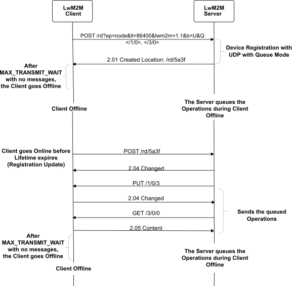

IOWA Network environment
Network reliability
Behind the transport
Network reliability is a real issue when a system is deployed in an environment. Some networks can be reliable, when others do not guarantee the transmission of a message from one side to another.
IOWA supports the following transports:
User Datagram Protocol (aka UDP)
Transmission Control Protocol (aka TCP)
LoRaWAN
Short Message Service (aka SMS)
For each transport, a set of constants is defined to maximize the chances that message is received. These constants can be simplified into two parts: a retransmission counter and an initial timeout. The retransmission counter is the number of attempts to send until the communication is considered as failed. The initial timeout is the number of second to wait for a response before resending the message.
The algorithm is as follows: when the initial timeout is triggered and the retransmission counter is less than the maximum retransmission number, the message is retransmitted, the retransmission counter is incremented, and the timeout is doubled. If the retransmission counter reaches the maximum retransmission number on a timeout, then the attempt to transmit the message is canceled and the application process is notified of the failure. On the other hand, if the endpoint receives a response in time, transmission is considered successful.
In IOWA, it means:
On server side: when an operation is performed, such as for a LwM2M Server a Read operation, if the message is not received by the client, the callback [
iowa_result_callback_t][iowa_result_callback_t] will be called with status sets to IOWA_COAP_503_SERVICE_UNAVAILABLE.On client side: if a Confirmable message is not acknowledged by the LwM2M Server such as the registration message, the registration update message, or a confirmable notification, the connection is considered lost. In case of registration or registration update, the callback [
iowa_event_callback_t][iowa_event_callback_t] will be called with eventP->eventType sets to IOWA_EVENT_REG_FAILED and the function [iowa_step][iowa_step] will exit by returning IOWA_COAP_503_SERVICE_UNAVAILABLE. On the other hand, if a confirmable notification is not acknowledged, the LwM2M Client deactivates the Server Account until the connection is reestablished, that is, an Acknowledge is received on a Confirmable message.On both side: if the Platform layer returns a negative value on [
iowa_system_connection_send][iowa_system_connection_send], [iowa_system_connection_recv][iowa_system_connection_recv] or [iowa_system_connection_select][iowa_system_connection_select], the connection will be considered lost and [iowa_step][iowa_step] will exit by returning IOWA_COAP_503_SERVICE_UNAVAILABLE.
SMS specific behaviors
MSISDN Fallback
There is a MSISDN fallback for the Client when the connection cant be established on a Registration message or a Registration Update message is not acknowledged.
This fallback can be activated with the define [IOWA_SMS_SUPPORT][Transports] and by providing the LwM2M Server MSISDN number with [iowa_client_set_server_msisdn][iowa_client_set_server_msisdn]. In that case, if the LwM2M Client cannot reach a LwM2M Server, IOWA will close the current connection before opening a new SMS connection to try to register with this transport. On this second attempt, if the LwM2M Client has again no response from the LwM2M Server, [iowa_step][iowa_step] will exit by returning IOWA_COAP_503_SERVICE_UNAVAILABLE.

Registration Update Trigger message
On the LwM2M Server side when an operation is not acknowledged by the LwM2M Client, the Server can generate a Registration Update Trigger message with [iowa_server_create_registration_update_trigger_message][iowa_server_create_registration_update_trigger_message]. This message has to be sent by SMS to the Client.
For this purpose, the Client must at least on its Registration message give its MSISDN number. This MSISDN number can be provided to IOWA when calling [iowa_client_configure][iowa_client_configure] and setting infoP->msisdn. Last but not least, the Client has to listen on incoming SMS messages. If a message is received out of bound, the Client has to call [iowa_client_new_incoming_connection][iowa_client_new_incoming_connection]. If the message received is a Registration Update Trigger, IOWA will automatically sends a Registration Update using the Client preferred binding.
Network reachability
The LwM2M Server should always be present. But this is not the case for the LwM2M Client. There are multiple reasons for a LwM2M Client not to be available.
A LwM2M Server can deactivate the connection with a LwM2M Client for a certain period. This mechanism can be triggered by executing the resource Disable (ID: 4) of the [
Server Object][Server Object]. The LwM2M Server Account will be disabled for a certain period defined in the Disabled Timeout Resource (ID: 5). After receiving the Execute operation, LwM2M Client must perform the deregistration process, and underlying network connection between the LwM2M Client and LwM2M Server must be disconnected to disable the LwM2M Server account. After the above process, the LwM2M Client must not send any message to the Server and ignore all the messages from the LwM2M Server for the period. Once the disabled timeout expires, the client restarts the registration process to reconnect to the LwM2M Server.In LwM2M, there is a mechanism called Queue Mode which offers functionality for a LwM2M Client to inform the LwM2M Server that it may be disconnected for an extended period and when it becomes reachable again. When the LwM2M Client is not reachable, the LwM2M Server does not immediately send downlink requests, but instead waits until the LwM2M Client becomes reachable again.
Flow

A typical Queue Mode sequence follows the steps listed below:
The LwM2M Client registers to the LwM2M Server and requests the LwM2M Server to run in Queue mode.
The LwM2M Client should use the CoAP constant MAX_TRANSMIT_WAIT (93 seconds) to set a timer for how long it shall stay awake after sending a message to the LwM2M Server. After the timeout expires without any messages from the LwM2M Server, the LwM2M Client enters sleep mode.
At some point in time the LwM2M Client wakes up again and transmits a registration update message. Note: During the time the LwM2M Client has been sleeping the IP address assigned to it may have been released and/or existing NAT bindings may have been released. If this is the case, then the client needs to re-run the TLS/DTLS handshake with the LwM2M Server since an IP address and/or port number change will destroy the existing security context.
When the LwM2M Server receives a message from the Client, it determines if any messages need to be sent to the LwM2M Client, as instructed by the Application Server.
IOWA API
IOWA introduces two APIs to handle the Queue Mode: [iowa_flush_before_pause][iowa_flush_before_pause] and [iowa_client_send_heartbeat][iowa_client_send_heartbeat].
[iowa_flush_before_pause][iowa_flush_before_pause] is used to inform the LwM2M stack that the device will pause. iowa_flush_before_pause() performs all the pending and required operations of the LwM2M stack engine before returning. It means that if the registration lifetime expires during the device sleep, IOWA will send a registration update before returning from this function. When waking up, the LwM2M Client is connected again to the LwM2M Server.
This function also returns a parameter delayP to indicate when the next scheduled IOWA operation is.
[iowa_client_send_heartbeat][iowa_client_send_heartbeat] is used to send an heartbeat message to a LwM2M Server. Depending of the transport, the heartbeat sent can be a CoAP Empty message on LoRaWAN, or a registration update message for others transports.
Below an example in pseudo-code to use these APIs:
#include "iowa_client.h"
int main(int argc,
char *argv[])
{
iowa_context_t iowaH;
iowa_status_t result;
/******************
* Initialization
*/
iowaH = iowa_init(NULL);
iowa_client_configure(iowaH, "IOWA_Sample_QM_Client", NULL, NULL);
iowa_client_add_server(iowaH,
1234,
"coap://localhost:5683",
0,
0,
IOWA_SEC_NONE);
/******************
* "Main loop"
*/
do
{
uint32_t iowaDelay;
// Run for 93 seconds
result = iowa_step(iowaH, 93);
// Prepare to stand by for 60 minutes
result = iowa_flush_before_pause(iowaH, 3600, &iowaDelay);
if (iowaDelay < 3600)
{
STAND_BY(iowaDelay);
}
else
{
STAND_BY(3600);
iowa_client_send_heartbeat(iowaH, 1234);
}
} while (result == IOWA_COAP_NO_ERROR)
iowa_client_remove_server(iowaH, 1234);
iowa_close(iowaH);
return 0;
}
In the above example, after calling [iowa_flush_before_pause][iowa_flush_before_pause], there are two possibilities:
iowaDelay is inferior to the requested stand by time. It means that on next [
iowa_step][iowa_step] call, IOWA will send to the Server a message such as notification, registration update, etc. So, the Server will notice the device wake up and send back any buffered requests.Or, iowaDelay is equal to the requested stand by time. In that case, IOWA has nothing to send on next iowa_step() turn. To inform the Server that the device is awake, [
iowa_client_send_heartbeat][iowa_client_send_heartbeat] needs to be called.